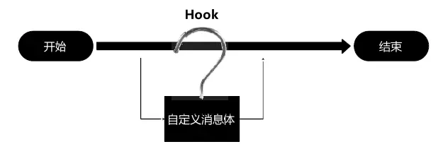

概述
Class
class文件是Java编译后的目标文件，不像J2se，java编译成class就可以直接运行，android平台上class文件不能直接在android上运行。 由于Google使用了自己的Dalvik（后来又变成了ART）来运行应用， 所以这里的class也肯定不能在AndroidDalvik的java环境中运行， android的class文件实际上只是编译过程中的中间目标文件，需要链接成dex文件后才能在dalvik上运行。
Dex
dex文件是Android平台上的可执行文件。在编译Java代码之后，通过Android平台上的工具可以将Java字节码转换成Dex字节码。
Apk
apk文件是Android上的安装文件。一个Android安装包包含了与某个Android应用程序相关的所有文件。apk文件将AndroidManifest.xml文件、应用程序代码(.dex文件)、资源文件和其他文件打成一个压缩包。
Hook
Hook 又叫“钩子”，它可以在事件传送的过程中截获并监控事件的传输，将自身的代码与系统方法进行融入。这样当这些方法被调用时，也就可以执行我们自己的代码，这也是面向切面编程的思想（AOP）。
Hook 分类
- 根据Android开发模式，Native模式（C/C++）和Java模式（Java）区分，在Android平台上
- Java层级的Hook；
- Native层级的Hook；
- 根据Hook 对象与 Hook 后处理事件方式不同，Hook还分为：
- 消息Hook；
- API Hook；
- 针对Hook的不同进程上来说，还可以分为：
- 全局Hook；
- 单个进程Hook；
Hook选择的关键点
- Hook 的选择点：尽量静态变量和单例，因为一旦创建对象，它们不容易变化，非常容易定位。
- Hook 过程：
- 寻找 Hook 点，原则是尽量静态变量或者单例对象，尽量 Hook public 的对象和方法。
- 选择合适的代理方式，如果是接口可以用动态代理。
- 偷梁换柱——用代理对象替换原始对象。
- Android 的 API 版本比较多，方法和类可能不一样，所以要做好 API 的兼容工作。
工具
ApkTool
Apktool可以用来查看apk中的资源文件及布局文件，下载地址：https://bitbucket.org/iBotPeaches/apktool/downloads/ 。下载了apktool.jar后，可使用如下apktool脚本反编译apk：
1 | !/bin/bash |
使用方法：
1 | decode |
dex2jar和jar2dex
这是classes.dex转为jar包的工具，下载地址：https://github.com/pxb1988/dex2jar 。使用方法：
1 | ./d2j-dex2jar.sh -f xxx.apk |
JD-GUI
可使用JD-GUI工具查看apk的源代码，下载地址：http://java-decompiler.github.io/ 。使用方法：直接打开dex2jar生成的jar文件即可查看。
baksmali
可使用baksmali工具把dex转换成smali，下载地址：https://bitbucket.org/JesusFreke/smali/downloads/?tab=downloads 。使用方法：
1 | java -jar baksmali.jar -o [输出文件夹] dex文件 |
smali
可使用smali工具将smali转换成dex，下载地址：https://bitbucket.org/JesusFreke/smali/downloads/?tab=downloads 。使用方法：
1 | java -jar smali.jar -o 目标dex文件 [smali文件夹] |
signer
关于签名的内容在Android签名笔记中有了新的更新。
工具介绍
- jarsigner是JDK提供的针对jar包签名的通用工具，位于JDK/bin/；
- apksigner是Google官方提供的针对Android apk签名及验证的专用工具,位于Android SDK/build-tools/SDK版本/。
不管是apk包，还是jar包，本质都是zip格式的压缩包，所以它们的签名过程都差不多(仅限V1签名)，以上两个工具都可以对Android apk包进行签名。
V1和V2签名
从Android 7.0开始, 谷歌增加新签名方案 V2 Scheme (APK Signature);但Android 7.0以下版本, 只能用旧签名方案 V1 scheme (JAR signing)。
- V1签名:来自JDK(jarsigner), 对zip压缩包的每个文件进行验证, 签名后还能对压缩包修改(移动/重新压缩文件)，对V1签名的apk/jar解压,在META-INF存放签名文件(MANIFEST.MF, CERT.SF, CERT.RSA), 其中MANIFEST.MF文件保存所有文件的SHA1指纹(除了META-INF文件), 由此可知: V1签名是对压缩包中单个文件签名验证。
- V2签名:来自Google(apksigner), 对zip压缩包的整个文件验证, 签名后不能修改压缩包(包括zipalign),对V2签名的apk解压,没有发现签名文件,重新压缩后V2签名就失效, 由此可知: V2签名是对整个APK签名验证。因此，V2签名更安全(不能修改压缩包)，且签名验证时间更短(不需要解压验证),因而安装速度加快
注意: apksigner工具默认同时使用V1和V2签名,以兼容Android 7.0以下版本
zipalign和V2签名
位于Android SDK/build-tools/SDK版本/下，zipalign是对zip包对齐的工具,使APK包内未压缩的数据有序排列对齐,从而减少APP运行时内存消耗。
1 | zipalign -v 4 in.apk out.apk # 4字节对齐优化 |
zipalign可以在V1签名后执行，但zipalign不能在V2签名后执行,只能在V2签名之前执行。
签名步骤
1. 生成密钥对
Eclipse或Android Studio在Debug时,对App签名都会使用一个默认的密钥库:~/.android/debug.keystore
密钥库名: debug.keystore
密钥别名: androiddebugkey
密钥库密码: android生成密钥对
1
2
3
4
5
6
7
8
9keytool -genkeypair -keystore 密钥库名 -alias 密钥别名 -validity 天数 -keyalg RSA
参数:
-genkeypair 生成一条密钥对(由私钥和公钥组成)
-keystore 密钥库名字以及存储位置(默认当前目录)
-alias 密钥对的别名(密钥库可以存在多个密钥对,用于区分不同密钥对)
-validity 密钥对的有效期(单位: 天)
-keyalg 生成密钥对的算法(常用RSA/DSA,DSA只用于签名,默认采用DSA)
-delete 删除一条密钥提示: 可重复使用此条命令,在同一密钥库中创建多条密钥对，例如，在debug.keystore中新增一对密钥,别名是release：
1
keytool -genkeypair -keystore debug.keystore -alias release -validity 30000
查看密钥库
1
2
3
4
5keytool -list -v -keystore 密钥库名
参数:
-list 查看密钥列表
-v 查看密钥详情
2. 签名
jarsigner
1 | jarsigner -keystore 密钥库名 xxx.apk 密钥别名 |
从JDK7开始, jarsigner默认算法是SHA256, 但Android 4.2以下不支持该算法,所以需要修改算法, 添加参数-digestalg SHA1 -sigalg SHA1withRSA：
1 | jarsigner -keystore 密钥库名 -digestalg SHA1 -sigalg SHA1withRSA xxx.apk 密钥别名 |
apksigner
1 | apksigner sign --ks 密钥库名 --ks-key-alias 密钥别名 xxx.apk |
3. 签名验证
keytool,只支持V1签名校验
1 | keytool -printcert -jarfile MyApp.apk (显示签名证书信息) |
apksigner,支持V1和V2签名校验
1 | apksigner verify -v --print-certs xxx.apk |
命令行打包签名apk
gradlew+keytool
通过keytool生成签名文件
配置build.gradle
1
2
3
4
5
6
7
8
9
10
11
12
13
14
15
16
17
18
19
20
21
22
23
24
25
26
27
28
29
30
31
32
33
34
35
36
37android {
signingConfigs {
release {
storeFile file("path/release.keystore")
storePassword "123456"
keyAlias "release.keystore"
keyPassword "123456"
}
debug {
storeFile file("path/test.keystore")
storePassword "123456"
keyAlias "test.keystore"
keyPassword "123456"
}
}
buildTypes {
release {
minifyEnabled enableProguardInReleaseBuilds
proguardFiles getDefaultProguardFile("proguard-android.txt"), "proguard-rules.pro"
signingConfig signingConfigs.release
android.applicationVariants.all { variant ->
variant.outputs.all {
if (variant.buildType.name.equals('release')) {
outputFileName = "SecureMail${defaultConfig.versionName}-${releaseTime()}.apk"
variant.getPackageApplication().outputDirectory = new File(
project.rootDir.absolutePath + "/app/release")
}
}
}
}
}
}
static def releaseTime() {
return new Date().format("yyyy-MM-dd", TimeZone.getTimeZone("UTC"))
}执行打包命令
1
./gradlew assemblerelease
aapt+java+keytool+apksigner
个人觉得实用性不大，故没有做笔记。
源码混淆
Android中代码混淆可以分为两部分：
- Java代码的优化与混淆，依靠 proguard混淆器来实现；
- 资源压缩，将移除项目及依赖的库中未被使用的资源(资源压缩严格意义上跟混淆没啥关系，但一般都会放一起用)。
混淆配置
1 | android{ |
开启混淆会使编译时间变长，所以debug模式下不开启。在打包时应修改配置如下：
- 将buildConfigField设置为false，不显示log日志；
- 将minifyEnabled值设为true，打开混淆；
- 将shrinkResources值设为true，打开资源压缩；
- signingConfig signingConfigs.config配置签名文件文件
- proguardFiles定义了混淆规则由两部分构成：位于SDK的
tools/proguard/文件夹中的 proguard-android.txt（SDK提供的默认混淆文件）的内容以及默认放置于模块根目录的 proguard-rules.pro（自定义混淆规则）。
自定义混淆规则
dex反编译修改Java层代码
反编译后得到的dex文件以及转为jar包后都无法进行修改，只能把dex文件转化为smali文件进行修改，然后再编译打包为dex文件，替换掉原有apk中的dex文件，然后对apk进行签名，这样就完成了对apk源码的修改，即需要学习smali相关的语法。具体步骤如下：
- 使用apktool工具反编译apk文件，可以得到相关的smali文件，通常来说一个class对应一个smali（或者直接解压apk文件，然后使用baksmali工具将里面的dex转换为smali）；
- 使用dex2jar工具把dex转为jar文件，然后可以通过JD-GUI进行查看；
- 修改对应的smali文件；
- 使用smali.jar工具把smali文件转为dex文件;
- 把新生成的classes.dex文件替换到原来的apk文件里
- 使用签名工具对apk进行签名。
so反编译修改Native层代码
so文件是Android NDK动态链接库，是二进制文件，作用相当于windows下的.dll文件，反编译Native代码需要学习ARM汇编。步骤如下：
- 使用apktool工具反编译apk文件，可以得到lib目录下各个架构的so文件；
- 使用编辑器打开so文件，并修改；
- 重新打包并签名apk文件。
Java运行shell命令
1 | public void runShell(String command) { |
封装类：
1 | public class ShellUtil { |
Xposed
Xposed可以用来hook Android应用的Java层，hook代码编写比较方便，不过需要在手机上安装Xposed框架，且每次修改需要重启手机才能生效。Xposed使用中需要注意以下问题：
- 这个框架的核心点是系统进程注入技术，那么如果要注入系统进程，就必须要有一个root的设备。
- 不是所有的设备所有的系统都支持这个框架的使用。
- Xposed框架针对不同系统也发布了多个版本，所以得针对于自己的设备系统安装正确的Xposed版本。
CydiaSubstrate
这个框架可以hook Java和Native层的代码，在手机上需要安装这个框架，也可能会失败。
Frida
Legend
对比
XPOSED
优点：
代码编写方便，开发速度较快。
有许多现成的模块可以用，而且很多模块也是开源的，方便学习研究。
缺点：
每次编写代码需要重启手机生效。
不支持native的HOOK。
独立性较差，需要依赖XPOSED installer，不易单独分发。
substrate
优点：
比较擅长在native层的HOOK。
独立性较好，实现的功能可以封装在单独APP里分发给用户使用，因此也是较大型外挂辅助工具的首选。
缺点：
每次编写代码需要重启手机生效。
开发效率较低，成本较高。
frida
优点：
无须重启手机和目标APP，这个可以节省很多时间，如果APP测试的点需要很复杂地搭建好环境，一旦重新启动就意味着很麻烦地再重新搭建环境，例如账号登录，进入特定关卡等。
JS脚本编写，灵活方便，再也不用担心多参数个数和类型问题了。
可以直接使用或修改对象的成员变量，非常方便。
配合PC终端命令行使用，脚本编写出错也不会导致APP崩溃，只需修改后重新来过即可，有时会有问题，这个时候需要重启下APP或手机即可。
缺点：
JS脚本套在python脚本里面，编写JS脚本时候不是很方便，容易出错，好在即使出错也不会导致APP崩溃掉，修改后重新来过即可。
该工具配合PC终端使用，更适合专业者，不利于分发给用户使用。
Legend
优点：
不需要root权限。
缺点：
只能hook自身。